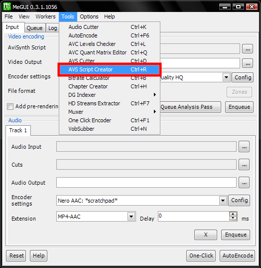
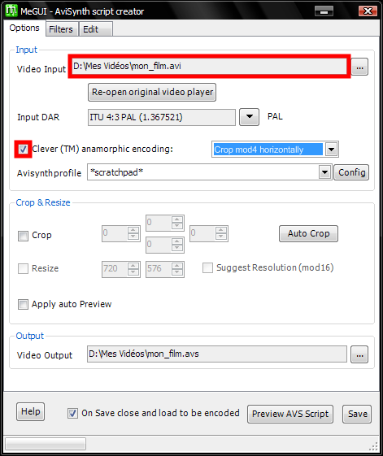
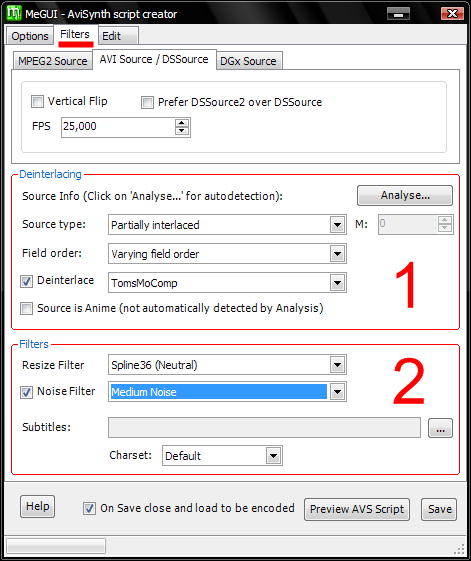
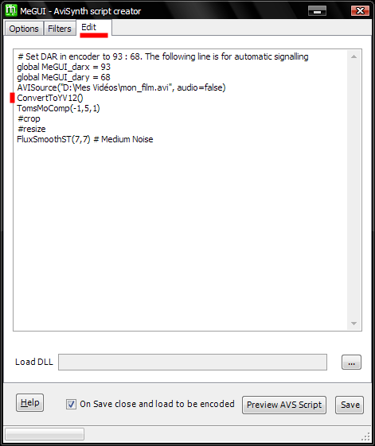
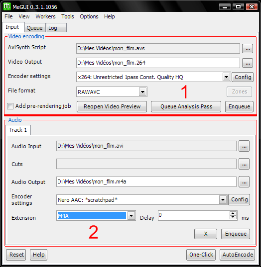
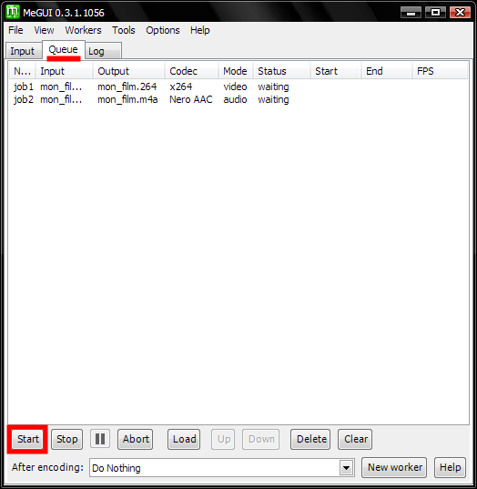
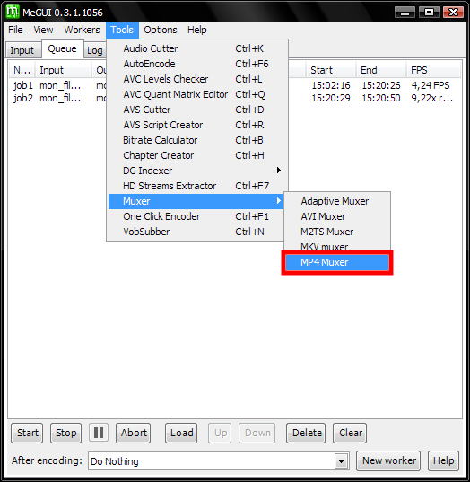
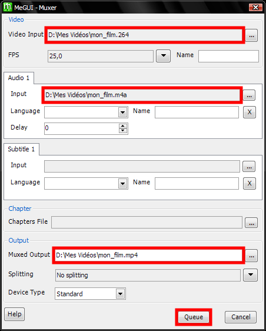

Si MeGUI n'est pas encore installé, passez d'abord par l'installation.
Avant de compresser votre vidéo, il convient de la préparer un peu (désentrelacement, filtrage, dimensionnement, ...). Tout passe par la création d'un script AVS.

La fenêtre de création de script s'affiche, commençons par l'onglet Options.

Passons à l'onglet Filters.

Terminons avec l'onglet Edit.

Ici vous pouvez éditer le script AVS tel qu'il sera enregistré, et vérifier que tous les filtres souhaités seront bien appliqués.
Une modification est à apporter : ajoutez comme moi la ligne ConvertToYV12() après l'ouverture de la vidéo. Cela permettra aux deux filtres qui suivent d'accepter de fonctionner.
Cliquez finalement sur Save. Une fenêtre de prévisualisation apparaît, cochez-y show DAR et vérifiez que le ratio d'affichage est correct. S'il indique 1,25 alors changez-le en choisissant ITU 4:3 PAL.
De retour à l'écran de base de MeGUI, le script AVS a été automatiquement chargé.

Allons à l'onglet Queue.

L'audio et la vidéo attendent d'être compressés.
Cliquez sur Start et faites une bonne pause, une compression c'est long...
ps : Si vous souhaitez utiliser votre PC pendant la compression, n'oubliez pas de descendre la priorité de l'encodage à Below Normal.
pps : Si une erreur survient, allez dans l'onglet Log, trouvez le texte de l'erreur et copiez-le dans Google, vous tomberez sur un tas de gens ayant eu exactement le même problème (et qui l'ont résolu bien sûr).
Nous allons à présent muxer l'audio et la vidéo, c'est à dire en faire un seul et même fichier.

Voici la fenêtre dédiée au muxing.

Indiquez à MeGUI vos fichiers vidéo et audio compressés, renommez Muxed Output comme bon vous semble et cliquez sur Queue.
ps : Dans Muxed Output ou même après le muxing, vous pouvez renommer l'extension en .flv, auquel cas vous pourrez utiliser le fichier avec un player web.
Pour finir, un tour dans l'onglet Queue, on lance le job correspondant au muxing (ça fait beaucoup d'anglicismes !) et c'est fini !
Chez moi, après une compression réussie il arrive que je ne puisse pas éteindre le PC. C'est MeGUI qui ne s'est pas fermé correctement, faites alors un tour par le Gestionnaire des Tâches pour le quitter.